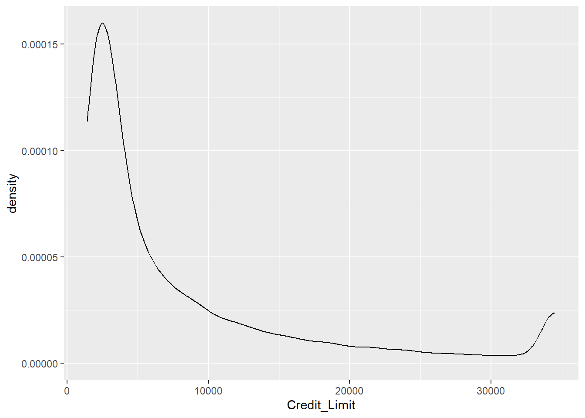

data_netflix <- read.csv("netflix_titles.csv")1 Important R concepts
Most exercises involve working with the statistical software R. Since a comprehensive recap of R would go beyond the scope of this lecture, we only review libraries and concepts we frequently need throughout the exercises. For a comprehensive introduction to R, see YARDS by Dr. Albert Rapp.
1.1 Setting up R
1.1.1 Installing R, RStudio, and getting started with Quarto
Before starting the revision, we need to ensure that R and RStudio are installed. The installation process for both R and RStudio is straightforward and user-friendly. While R (the programming language) comes with a preinstalled graphical user interface, we will use the integrated development environment RStudio instead, as it looks more appealing and provides some features RGui lacks. It is important to note that in order to get RStudio to work, R needs to be installed first.
After successfully installing R and RStudio, starting the latter should open a window that somewhat looks like the following (cf. RStudio User Guide).

The Source pane displays a .R file named ggplot2.R. While .R files are the standard file format for R scripts used for programming in R, we will use Quarto documents (files ending with .qmd). Quarto labels itself as the
next-generation version of R Markdown,
meaning that a Quarto document allows
weaving together narrative text and code to produce elegantly formatted output as documents, web pages, books, and more.
Quarto is preinstalled in RStudio, so creating such documents is relatively simple.
click on
New File -> Quarto Document...in theFiletab
Once the
New Quarto Documentwindow opens, you can modify the title and specify the output format. For the sake of simplicity, we will use the HTML output format. However, you could also choose PDF if you have a LaTeX installation on your device. Clicking on thecreatebutton will create a new Quarto Document.
The source pane now displays a sample Quarto document that can be modified. You might have to install
rmarkdown(cf. mark 1). The Quarto document can then be modified by clicking on the respective sections. R Code cells can be executed by clicking on the green arrow (cf. mark 2). To insert new R code cells between paragraphs, click on theInserttab and selectExecutable Cell -> R(cf. mark 3).
This should be enough to get you started with Quarto Documents. For further reading, I recommend the Quarto Guide.
Tip
- While solving the (programming) exercises, you can create a new paragraph using
#for a new chapter to make your document more readable. Additionally, you can simply create a section using##. - Writing down some details on how you approached the programming exercises in a paragraph above or below can help you understand your approach when repeating the exercises later.
1.1.2 Working directories and projects
After opening RStudio, execute the getwd() command in the console pane, which returns the current working directory. The working directory displays the directory of the R process. For example, if the return value of the getwd() command is C:\Users\lachlinu\Desktop\ML, then R can access any file in the ML directory. One way to change the working directory is using the setwd() command, which changes the current working directory. Manually changing the directory in every .qmd document might become tedious after a while, so a more practical alternative is setting up a project. RStudio projects allow the creation of an individual working directory for multiple contexts. For example, you might use R not only for solving Machine Learning exercises but also for your master’s thesis. Then, setting up two different projects will help you organize working directories and workspaces for each project individually. To set up a project for this course
Go to the
Filetab and selectNew Project....
Choose
Existing Directoryand navigate to the directory in which you want to create the project in and click theCreate Projectbutton.You can now open the project by double clicking on the icon which should open a new RStudio window.
Once the project is opened, running the getwd() command in the console pane returns its path. Any file in this directory can be directly accessed without specifying the preceding path.
1.2 Help, my code doesn’t do what I expect it to do!
Debugging, also known as finding out why code does not behave as expected, plays a substantial role in programming. Even after years of practice, occasional bugs will occur. There are several more or less effective approaches to resolve problems that might occur in the context of this course, with debugging being a key focus.
A simple Google search can do wonders. Most questions that arise in the context of this lecture have probably been asked on boards like Stack Overflow. Alternatively, the search results might contain websites like DataCamp or GeeksforGeeks, which will most likely answer your question as well.
Using a large language model like ChatGPT. When it comes to debugging or coding questions in general, large language models are helpful. Enter your question as a prompt and the answer will likely help you. However, when using less popular libraries, the answers might contain hallucinations that make it much more difficult to resolve your problem.
The internal
helpfunction, while it might be considered old-school, is a highly effective troubleshooting approach. It can provide valuable insights when a function doesn’t behave as expected. If a function doesn’t behave as expected, typing?function_namein the console pane opens the respective help page. TheArgumentssection of the help page explains the different input parameters of a function. TheValuesection describes what the function intends to return. Examples of how to use a function are provided in the last section of the help.If each of the steps above fails, you can also ask questions via mail. When reporting a problem via mail, it’s crucial to provide some context and the steps you’ve tried to solve it yourself. This information is invaluable in understanding the issue and providing an effective solution. Also, as part of the learning process, try solving the problems first since that is one of the most essential skill sets to develop.
1.3 Working with datasets
In the context of machine learning, data builds the foundation. Whether you want to predict the weather, future stock prices, or the base rent of a potential rental apartment, without high-quality data, even the most advanced models fail. However, the reality is that data we gather from the web, servers, or spreadsheets is often far from pristine. For example, missing values could be encoded as NA (Not Available), NaN (Not a Number), NULL, or simply by an empty string " ". That is why knowing your way around basic data manipulation is essential.
1.3.1 Importing data
To manipulate data, we first need to import it. R has quite a few preinstalled data sets; however, I prefer data sets that are either more complex, related to everyday life, or just more fun to explore. This course will provide most of the data in .csv or .txt files. Before we can start manipulating data, it’s essential to import it correctly. This ensures that the data is in the right format for further analysis.
Consider the Netflix Movies and TV Shows data set, which can be downloaded from the data science community website Kaggle or directly below.
Once you have downloaded the data and placed it in your current working directory, you can import it using the read.csv command:
Pro Tip
To maintain structure in your project folder, it is advisable to create a separate directory for the data and import it from there. For example, if the project directory contains a data directory with the netflix_title.csv file inside, it can be imported using
data_netflix <- read.csv("data/netflix_titles.csv")1.3.2 Essential functions and libraries
One of the most versatile and essential collection of libraries in the context of data science with R is the {tidyverse} library, which includes
{ggplot}for creating beautiful graphics,{dplyr}for data manipulation,{stringr}for working with strings, and{tibble}for storing data effectively.
An excellent in-depth introduction to the tidyverse called R for Data Science is freely available online if that piques your interest. This introduction focuses on a few core functions that will be useful throughout the course. As every other library, {tidyverse} can be attached using the library function once it has been installed:
install.packages("tidyverse")
library(tidyverse)Once the library has been added, every function contained is available. For example, the glimpse function can be used on the data_netflix data set to get a short overview of the data types and contents:
glimpse(data_netflix)Rows: 8,807
Columns: 12
$ show_id <chr> "s1", "s2", "s3", "s4", "s5", "s6", "s7", "s8", "s9", "s1…
$ type <chr> "Movie", "TV Show", "TV Show", "TV Show", "TV Show", "TV …
$ title <chr> "Dick Johnson Is Dead", "Blood & Water", "Ganglands", "Ja…
$ director <chr> "Kirsten Johnson", "", "Julien Leclercq", "", "", "Mike F…
$ cast <chr> "", "Ama Qamata, Khosi Ngema, Gail Mabalane, Thabang Mola…
$ country <chr> "United States", "South Africa", "", "", "India", "", "",…
$ date_added <chr> "September 25, 2021", "September 24, 2021", "September 24…
$ release_year <int> 2020, 2021, 2021, 2021, 2021, 2021, 2021, 1993, 2021, 202…
$ rating <chr> "PG-13", "TV-MA", "TV-MA", "TV-MA", "TV-MA", "TV-MA", "PG…
$ duration <chr> "90 min", "2 Seasons", "1 Season", "1 Season", "2 Seasons…
$ listed_in <chr> "Documentaries", "International TV Shows, TV Dramas, TV M…
$ description <chr> "As her father nears the end of his life, filmmaker Kirst…Rows: 8,807 means that the data set has 8,807 entries, and Columns: 12 means that the data set has 12 variables, respectively. The first column presents the variable names, their data types, and some initial values, providing a clear structure to the data set. We can already see that except for one variable (release_year), every other variable is of type chr, which stands for character or string.
1.3.2.1 Filtering, grouping, and summarizing data sets
Functions frequently encountered while working with data are filter, group_by, and summarise. Let’s say we want to find out, according to the data set, how many movies and series were released in each year following 2010. Now, if we were to tackle this problem without the {tidyverse} framework, our code might look a little something like this:
netflix_filtered <- data_netflix[data_netflix$release_year > 2010, ]
result <- aggregate(rep(1, nrow(netflix_filtered)),
by = list(netflix_filtered$release_year),
FUN = sum)
colnames(result) <- c("release_year", "n")
result release_year n
1 2011 185
2 2012 237
3 2013 288
4 2014 352
5 2015 560
6 2016 902
7 2017 1032
8 2018 1147
9 2019 1030
10 2020 953
11 2021 592or this:
netflix_filtered <- data_netflix[data_netflix$release_year > 2010, ]
result <- as.data.frame(table(netflix_filtered$release_year))
colnames(result) <- c("release_year", "n")
result release_year n
1 2011 185
2 2012 237
3 2013 288
4 2014 352
5 2015 560
6 2016 902
7 2017 1032
8 2018 1147
9 2019 1030
10 2020 953
11 2021 592The first code cell seems much more complicated than the second, yet it returns the same result. However, things can be simplified even more using the {dplyr} library that is contained in the {tidyverse}:
Let us break down the code snippet above:
In line
1we use the pipe operator%>%. It is part of the{magrittr}package and forwards an object into a function of call expression. Figuratively, a pipe does precisely what is expected: channel an object from one and to another. In this case, the pipe operator%>%passes thedata_netflixdata set into thefilterfunction.In line
2thefilterfunction selects a subset of a data set that satisfies a given condition. Here, the condition is that the movie or series’ release year should be after2010, which is indicated by the>condition.NoteWithout the pipe operator, the first and second line can be merged into
filter(data_netflix,release_year>2010)however, concatenating multiple functions causes the code to be unreadable and should thus be avoided.
Results of the filtering procedure are then passed to the
group_byfunction via the pipe operator again. Thegroup_byfunction converts the underlying data set into a grouped one where operations can be performed group-wise. In the third line of the code cell, thegroup_byfunction is applied to therelease_yearvariable, meaning that the data set now contains a group for every release year.This can be seen as a pre-processing step for the
summarisefunction applied in the following line. Thesummarisefunction creates a new data set based on the functions passed as arguments. These functions are applied to every group created by the previous step. In the example above, the function applied isn(), which returns the group size. Thus, settingn=n()as the argument creates a new column namedn, which contains the number of samples within each group.
1.3.3 Mutating data sets
Besides filtering, grouping, and summarizing, another important concept is mutating the data, i.e., modifying the content of the data set.
The mutate function either creates new columns or modifies existing columns based on the passed column names and functions that are passed. It is helpful for modifying data and their types, creating new variables based on existing ones, and removing unwanted variables. In the example below, the mutate function is used to modify the variable date_added, create a new variable called is_show and delete the variable type.
In the first line of the code cell, the data set
data_netflixis specified to be overwritten by its mutated version. Overwriting a data set is achieved by reassigning thedata_netlifxobject to the output of the pipe concatenation of the following code lines.The original
data_netflixdata set is passed into the mutate function in the second line. Here, the variabledate_writtenis overwritten by the output of themdyfunction with argumentdate_added. Themdyfunction is a function in the{lubridate}library that transforms dates stored in strings todateobjects that are easier to handle. Note that we can directly pass column names into functions as we have previously passed the data set into themutatefunction using the%>%operator.In the third line, a new variable
is_showis created, which takes the valueTRUE, if the type of an entry in the data set is"TV Show"andFALSEif it is not. Theif_elsefunction achieves this.Setting the
typevariable toNULLeffectively removes it from the data set.
Note
Assigning values in functions is achieved by using the = symbol. Assigning new variables outside of functions can also be done with the = symbol, but it is rarely used and except for some pathological cases there is no difference. However, most R users prefer assigning environment variables using <- which does not work in function calls.
Pro Tip
In the previous code cell a line break was added after the %>% and each argument in the mutate function for readability purposes. The code also works without adding the line breaks, but it can get messy fast:
data_netflix <- data_netflix %>% mutate(date_added = mdy(date_added), is_show = if_else(type=="TV Show",TRUE,FALSE), type = NULL)1.3.4 Factor Variables
An important data type that can handle both ordinal (data with some notion of order) and nominal data are so-called factor variables.
Consider the following toy data set containing seven people with corresponding age groups and eye colors.
# A tibble: 7 × 3
names age_groups eye_color
<chr> <chr> <chr>
1 Alice 18-25 Blue
2 Bob <18 Brown
3 Charlie 26-35 Green
4 Diana 36-45 Hazel
5 Eve 18-25 Brown
6 Frank 60+ Blue
7 Grace 26-35 Green Since the variable age_group only specifies a range of ages, it does not make sense to encode them as integers rather than ordinal variables. The’ mutate’ function can encode age groups as ordinal variables. This involves setting the age_groups variable to a factor with levels and labels. Levels specify the order of the values, and labels can be used to rename these categories.
Similar to the previous example, we should specify that we overwrite the
data_exampledata set with a mutated version.The
mutatefunction is applied to theage_groupsvariable.Setting
age_groups = factor(age_groups, ...)converts theage_groupscolumn into a (so far unordered) factor, allowing for specific levels (categories) and labels.levels = c("<18", "18-25",...)specifies the predefined levels for the age groups.ordered=TRUEspecifies that the age groups are ordered according to the specified levels.Last but not least,
labels = c("child", "adult", ...)specifies the labels that replace the numeric age groups. For instance, <18 is labeled as"child", the ranges 18-25, 26-35, and 36-45 are labeled as"adult", and 60+ is labeled as"senior".
Similarly, the variable eye_color can also be converted to a nominal factor variable:
data_example <- data_example %>%
mutate(
eye_color = factor(eye_color)
)To confirm that the variable age_group is indeed ordered, calling the feature shows the ordered levels:
data_example$age_groups[1] adult child adult adult adult senior adult
Levels: child < adult < senior1.4 Visualizing data with ggplot
Another critical aspect of data science and machine learning is graphical storytelling. Describing an algorithm strictly using mathematical notation or exploring a data set using descriptive and inductive statistics alone can make it challenging to understand the message. While R offers some base functions for creating graphics, this course primarily uses the library {ggplot2}. A comprehensive introduction to {ggplot2} can be found in Hadley Wickham’s book Elegant Graphics for Data Analysis. A short summary can be found below.
For the following example, we will use the netflix_filtered data set (see Section 1.3.2.1)
A graphic created with {ggplot2} consists of the following three base components:
The data itself.
ggplot(data = netflix_filtered)
Note, that the plot does not show any axis, ticks, and variables.
A set of aesthetics mappings that describe how variables in the data are mapped to visual properties.
ggplot(aes(x=release_year, y=n), data = netflix_filtered)Using the
aesfunction, we have specified that the release year should be mapped to the \(x\)-axis, and \(n\) to the \(y\)-axis.Lastly, the geom-layer (component) describes how each observation in the data set is represented.
Compared to the previous two code cells, a lot is going on here. So, let us break it down.
- The plus at the end of line
1is used to add another layer. geom_coladds a column chart to the canvas, creating columns starting at0and ending at \(n\). Then,+indicates that another layer is added.geom_pointrepresents the data as points on the plane, i.e., an \(x\) and \(y\)-coordinate. The+indicates that yet another layer is added afterward.- Lastly, the
geom_linefunction adds a line connecting each data point with the one following.
Pro TipsAs before, the data set can also directly be piped into the
ggplotfunction:netflix_filtered %>% ggplot(aes(x=release_year, y=n))+ geom_col()+ geom_point()+ geom_line()By changing the order of the layers, you can specify which layer should be added first and last. In this example, since
geom_colwas added first and every other layer is placed on top of the column plot.
- The plus at the end of line

There are a lot more functions and settings that can be applied to each function. A selection of those is discussed in the exercises.
1.5 Exercises
Throughout the exercises, we will work with the Credit Card Customers data set that can either be downloaded using the provided link or the button below.
The data set consists of 10,127 entries that represent individual customers of a bank including but not limited to their age, salary, credit card limit, and credit card category.
1.5.1 Statistical Data Exploration and Manipulation
We will start by getting a feeling for the data and performing some basic data manipulation steps.
Exercise 1.1 Import the data set and use the glimpse function to generate a summary of the data set.
Exercise 1.2 Assume that the data set has been imported and saved as an object called credit_info. Explain the following code snippet both syntactically and semantically. Hint: Use the help function for any function you do not know.
credit_info %>%
select_if(is.character) %>%
sapply(table)$Attrition_Flag
Attrited Customer Existing Customer
1627 8500
$Gender
F M
5358 4769
$Education_Level
College Doctorate Graduate High School Post-Graduate
1013 451 3128 2013 516
Uneducated Unknown
1487 1519
$Marital_Status
Divorced Married Single Unknown
748 4687 3943 749
$Income_Category
$120K + $40K - $60K $60K - $80K $80K - $120K Less than $40K
727 1790 1402 1535 3561
Unknown
1112
$Card_Category
Blue Gold Platinum Silver
9436 116 20 555 Exercise 1.3 Overwrite the variables Income_Category and Education_Level into ordered factors. When setting the levels for each group, set "Unknown" as the lowest level. Use this cleaned data set for the remaining exercises.
Exercise 1.4 Group the data set by income category and find out each group’s mean and median credit limit.
Exercise 1.5 Which income group has the highest mean credit limit?
Exercise 1.6 Use the following code snippet to modify the data set by incorporating it into the mutate function. The snippet converts all "Unknown" values contained in character or factor columns into NA values, which are easier to handle.
across(where(~ is.character(.) | is.factor(.)),
~na_if(.,"Unknown"))Exercise 1.7 Apply the na.omit() function to the data set to remove all samples in the data set that contain NA values. How many samples have been removed in total?
Sometimes, we only want to infer results for specific subgroups. The Blue Credit Card is the most common type of credit card. Gaining insights for this particular group allows us to retrieve information that might be useful in later analyses.
Exercise 1.8 Find out how many customers have a Blue credit card.
Exercise 1.9 Create a new data set credit_info_blue containing all customers that hold a Blue credit card.
Exercise 1.10 Find the number of female customers holding the Blue Card who are, at most, 40 years old and have a credit limit above 10,000 USD.
1.5.2 Visual Data Exploration
Exercise 1.11 We now want to explore some of the demographics in our data set. Create a histogram for the age of the customers using the geom_histogram function. Note that only one variable is required for the aesthetics to create a histogram.
Exercise 1.12 Using the default parameters in the geom_histogram function, the message “stat_bin() using bins = 30. Pick better value with binwidth.” is displayed. Modify the code so that each age gets its own bin.
Exercise 1.13 Now that the histogram looks more organized, we want to add more information. For example, by setting the fill option to Gender, we can create two overlapping histograms showing the number of male and female customers within each age group.
Exercise 1.14 Instead of visualizing the Gender as in the plot above, we now want to analyze the continuous variable Credit_Limit. Therefore, instead of a histogram, use the geom_density function that plots an estimate of the underlying probability density.
Exercise 1.15 The histograms and density plots only provide limited insight into the demographics and customer status as it is relatively complex to figure out the proportions of each group. To take this one step further, consider the following histogram, which shows the Education_Level within every bin.
ggplot(data = credit_info_clean, aes(Customer_Age, fill = Education_Level))+
geom_histogram(binwidth = 1)We can use the geom_histogram function and the facet_wrap function, which generates a subplot for each group. Apply the facet_wrap function to create a subplot for each education level.
1.5.3 Loss functions
In future exercises, different loss functions will be deployed to measure how far some regression results deviate from actual values. This exercise, therefore, briefly discusses the advantages and disadvantages of some loss functions and introduces them in R.
Data-wise, we will consider the credit_info dataset and a simple linear model that is used to predict each customer’s credit limit.
The following Code snippet reads the unmodified data, removes the features Total_Revolving_Bal and Avg_Open_To_Buy and trains a linear model with target variable Credit_Limit on all the remaining features. It’s important to note that the model is intentionally kept simple for demonstrative purposes, making it easier for you to grasp and apply the concepts.
Copy the snippet into your own notebook and run it. Hint: You might have to change the path in the read.csv function to your specified data path (Exercise 2.1) and install the libraries that are attached.
library(tidymodels)
library(yardstick)
credit_info <- read.csv("data/BankChurners.csv")
model_linear_data <- credit_info %>%
select(-c(Total_Revolving_Bal,Avg_Open_To_Buy))
model_linear_res <- linear_reg() %>%
fit(Credit_Limit ~., data = model_linear_data) %>%
augment(model_linear_data)The object model_linear_res now contains our model’s original data set and predictions. Do not worry if you do not understand every line in the snippet above. We will consider training models in future exercises more thoroughly.
1.5.3.1 MAE Loss
The first loss function we explore is the Mean Absolute Error (MAE) loss defined as
\[\begin{equation*} \mathrm{MAE} := \mathrm{MAE}(y,\hat{y}):=\frac{1}{n}\sum_{i=1}^n |y_i-\hat{y_i}|, \end{equation*}\]
where \(y=(y_1,...,y_n)\) are target values and \(\hat{y}=(\hat{y_1},...,\hat{y_n})\) are estimates of the target values.
Exercise 1.16 Briefly explain how the MAE loss can be interpreted regarding the target features scale.
Exercise 1.17 The mae loss is a function in the {yardstick} library. If not already done, install the {yardstick} library and read the help function of the mae function. Then, apply it tot the model_linear_res data set and interpret the result.
1.5.3.2 (R)MSE
Another widely used loss function is the (Root)MeanSquareError. It is defined as
\[\begin{align*} \mathrm{RMSE} &:= \mathrm{RMSE}(y,\hat{y}) := \sqrt{\frac{1}{n}\sum_{i=1}^{n}(y_i-\hat{y_i})^2}\\ \mathrm{MSE} &:= \mathrm{MSE}(y,\hat{y}) := \frac{1}{n}\sum_{i=1}^{n}(y_i-\hat{y_i})^2 \end{align*}\]
Exercise 1.18 Repeat the exercise Exercise 1.16 and Exercise 1.17 for the RMSE and MSE.
1.6 Solutions
Solution 1.1 (Exercise 2.1).
credit_info <- read.csv("data/BankChurners.csv")Solution 1.2 (Exercise 2.2).
credit_info %>%
select_if(is.character) %>%
sapply(table)$Attrition_Flag
Attrited Customer Existing Customer
1627 8500
$Gender
F M
5358 4769
$Education_Level
College Doctorate Graduate High School Post-Graduate
1013 451 3128 2013 516
Uneducated Unknown
1487 1519
$Marital_Status
Divorced Married Single Unknown
748 4687 3943 749
$Income_Category
$120K + $40K - $60K $60K - $80K $80K - $120K Less than $40K
727 1790 1402 1535 3561
Unknown
1112
$Card_Category
Blue Gold Platinum Silver
9436 116 20 555 In the first line, the data set
credit_infois passed to the following line.The
credit_infodata set is passed into theselect_iffunction that selects columns of the data set based on some condition passed in the arguments. In this case, the condition is theis.characterfunction, that checks, whether a column is of typechr. The results are then piped into the following line.In the third line, the selected columns are passed into the
sapplyfunction, that applies a given function column wise to a data set and returns the resulting data set. Here, thetablefunction is applied generating a contingency table of the counts for each column.
Solution 1.3 (Exercise 1.3).
credit_info_clean <-credit_info %>%
mutate(Income_Category = factor(Income_Category,
levels = c("Unknown","Less than $40K",
"$40K - $60K","$60K - $80K",
"$80K - $120K","$120K +"),
ordered = TRUE),
Education_Level = factor(Education_Level,
levels = c("Unknown","Uneducated",
"High School","College",
"Graduate", "Post-Graduate",
"Doctorate")
)
)Solution 1.4 (Exercise 1.4).
credit_info_clean %>%
group_by(Income_Category) %>%
summarise(
meanlim = mean(Credit_Limit),
medlim = median(Credit_Limit)
)# A tibble: 6 × 3
Income_Category meanlim medlim
<ord> <dbl> <dbl>
1 Unknown 9517. 6380
2 Less than $40K 3754. 2766
3 $40K - $60K 5462. 3682
4 $60K - $80K 10759. 7660
5 $80K - $120K 15810. 12830
6 $120K + 19717. 18442Solution 1.5 (Exercise 1.5).
credit_info_clean %>%
group_by(Income_Category) %>%
summarise(
mean_group = mean(Credit_Limit)
)# A tibble: 6 × 2
Income_Category mean_group
<ord> <dbl>
1 Unknown 9517.
2 Less than $40K 3754.
3 $40K - $60K 5462.
4 $60K - $80K 10759.
5 $80K - $120K 15810.
6 $120K + 19717.Unsurprisingly, the highest income category also has the highest mean credit limit (19,717 USD).
Solution 1.6 (Exercise 1.6).
credit_info_clean <- credit_info_clean %>%
mutate(across(
where(~ is.character(.) | is.factor(.)),
~ na_if(., "Unknown")
))Solution 1.7 (Exercise 1.7).
nrow_old <- nrow(credit_info_clean)
credit_info_clean <- credit_info_clean %>%
na.omit()
glue::glue("{nrow_old-nrow(credit_info_clean)} samples were removed.")3046 samples were removed.Solution 1.8 (Exercise 1.8).
credit_info_clean %>%
group_by(Card_Category) %>%
summarise(n=n())# A tibble: 4 × 2
Card_Category n
<chr> <int>
1 Blue 6598
2 Gold 81
3 Platinum 11
4 Silver 391Solution 1.9 (Exercise 1.9).
credit_info_blue <- credit_info_clean %>%
filter(Card_Category == "Blue")Solution 1.10 (Exercise 1.10).
credit_info_blue %>%
filter(Gender == "F" &
Customer_Age <= 40 &
Credit_Limit > 10000) %>%
count() n
1 7Solution 1.11 (Exercise 1.11).
ggplot(data = credit_info_clean, aes(Customer_Age))+
geom_histogram()`stat_bin()` using `bins = 30`. Pick better value with `binwidth`.
Solution 1.12 (Exercise 1.12).
ggplot(data = credit_info_clean, aes(Customer_Age))+
geom_histogram(binwidth = 1)Solution 1.13 (Exercise 1.13).
ggplot(data = credit_info_clean, aes(Customer_Age, fill = Gender))+
geom_histogram(binwidth = 1)Solution 1.14 (Exercise 1.14).
ggplot(data = credit_info_clean, aes(Credit_Limit))+
geom_density()
Solution 1.15 (Exercise 1.15).
ggplot(data = credit_info_clean,
aes(Customer_Age, fill = Education_Level)
)+
geom_histogram(binwidth = 1) +
facet_wrap("Education_Level")Solution 1.16 (Exercise 1.16). The Mean Absolute Error (MAE) loss can be interpreted in terms of the scale of the target features because it directly measures the average absolute difference between predicted and actual target values. Thus, if the target variable is on a large scale (e.g., thousands), MAE will also be large. Conversely, for small target values, the MAE will be correspondingly smaller. This makes MAE sensitive to the scale of the target features, and it is essential to normalize or scale data if different features or targets are on very different scales to ensure the MAE provides meaningful comparisons across models or data sets.
Solution 1.17 (Exercise 1.17). The model_linear_res data set contains the .pred column, where predictions of the linear model are saved. We can use the predictions and the outcome variable Credit_Limit to calculate the MAE.
model_linear_res %>% mae(.pred,Credit_Limit)# A tibble: 1 × 3
.metric .estimator .estimate
<chr> <chr> <dbl>
1 mae standard 4114.An MAE of 4114 indicates that on average, the predicted credit limit of a customer deviates 4114 USD.
Solution 1.18 (Exercise 1.18).
Similar to the MAE loss, the RMSE can be interpreted in terms of the scale of the target features. It also measures the average difference between the observed and predicted values, but its unique feature is that it emphasizes outliers more. Greater distances are weighted more heavily due to the square term, thereby enhancing prediction accuracy.
model_linear_res %>% yardstick::rmse(.pred,Credit_Limit)# A tibble: 1 × 3 .metric .estimator .estimate <chr> <chr> <dbl> 1 rmse standard 5628.An RMSE of 5628 indicates that, on average, a customer’s predicted credit limit deviates 5628 USD.
As for the MSE, the error units are expressed as squared terms. Therefore, the scales can not be interpreted directly. MSE is usually deployed in practice since it has some nice properties like differentiability at \(0\), which the MAE lacks. Moreover, MSE is easier to compute, thanks to the absence of a square root, which reduces computational time.
model_linear_rmse <- model_linear_res %>% rmse(.pred,Credit_Limit) %>% pluck(".estimate") model_linear_rmse^2[1] 31676421
1.7 Session Info
The sessionInfo() function captures detailed information about the current R session, including the version of R and loaded packages. This is useful for ensuring reproducibility of analyses and troubleshooting code, as it provides a snapshot of the environment in which the code was executed.
sessionInfo()R version 4.2.3 (2023-03-15 ucrt)
Platform: x86_64-w64-mingw32/x64 (64-bit)
Running under: Windows 10 x64 (build 19045)
Matrix products: default
locale:
[1] LC_COLLATE=German_Germany.utf8 LC_CTYPE=German_Germany.utf8
[3] LC_MONETARY=German_Germany.utf8 LC_NUMERIC=C
[5] LC_TIME=German_Germany.utf8
attached base packages:
[1] stats graphics grDevices utils datasets methods base
other attached packages:
[1] yardstick_1.2.0 workflowsets_1.0.1 workflows_1.1.3 tune_1.1.2
[5] rsample_1.2.0 recipes_1.0.8 parsnip_1.1.1 modeldata_1.2.0
[9] infer_1.0.5 dials_1.2.0 scales_1.3.0 broom_1.0.5
[13] tidymodels_1.1.1 lubridate_1.9.2 forcats_1.0.0 stringr_1.5.0
[17] dplyr_1.1.2 purrr_1.0.2 readr_2.1.4 tidyr_1.3.0
[21] tibble_3.2.1 ggplot2_3.5.1 tidyverse_2.0.0
loaded via a namespace (and not attached):
[1] foreach_1.5.2 jsonlite_1.8.8 splines_4.2.3
[4] prodlim_2023.08.28 GPfit_1.0-8 yaml_2.3.8
[7] globals_0.16.2 ipred_0.9-14 pillar_1.9.0
[10] backports_1.4.1 lattice_0.20-45 glue_1.6.2
[13] digest_0.6.31 hardhat_1.3.0 colorspace_2.1-0
[16] htmltools_0.5.5 Matrix_1.6-0 timeDate_4022.108
[19] pkgconfig_2.0.3 lhs_1.1.6 DiceDesign_1.9
[22] listenv_0.9.0 gower_1.0.1 lava_1.7.2.1
[25] tzdb_0.4.0 timechange_0.2.0 generics_0.1.3
[28] farver_2.1.1 furrr_0.3.1 withr_3.0.0
[31] nnet_7.3-18 cli_3.6.1 crayon_1.5.2
[34] survival_3.5-3 magrittr_2.0.3 evaluate_0.20
[37] fansi_1.0.4 future_1.33.0 parallelly_1.36.0
[40] MASS_7.3-58.2 class_7.3-21 tools_4.2.3
[43] data.table_1.14.8 hms_1.1.3 lifecycle_1.0.4
[46] munsell_0.5.1 compiler_4.2.3 rlang_1.1.1
[49] grid_4.2.3 iterators_1.0.14 rstudioapi_0.15.0
[52] htmlwidgets_1.6.2 labeling_0.4.3 rmarkdown_2.21
[55] gtable_0.3.5 codetools_0.2-19 R6_2.5.1
[58] knitr_1.43 fastmap_1.1.1 future.apply_1.11.0
[61] utf8_1.2.3 stringi_1.7.12 parallel_4.2.3
[64] Rcpp_1.0.10 vctrs_0.6.3 rpart_4.1.19
[67] tidyselect_1.2.0 xfun_0.39